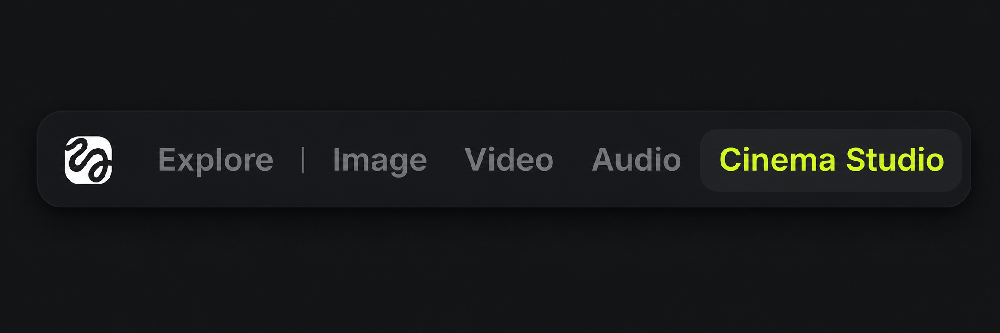
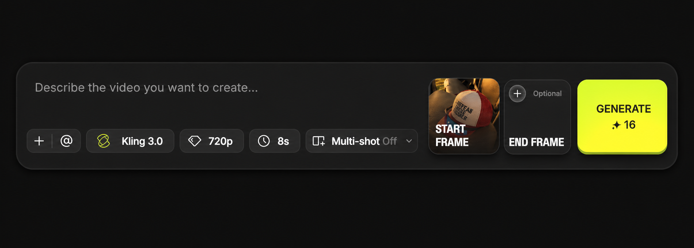

Kling 3.0 product placement
A simple repeatable workflow for turning a prepared product image into a short video while keeping object physics believable.
Choose the model → add one strong start frame → describe physical movement → generate.
The goal is not to over-direct every frame. Give Kling a clear object, a believable motion, and enough room to respect gravity, contact, and momentum.
Open Cinema Studio
From the top navigation, select Cinema Studio. This is the workspace where the video model controls live.

Select Kling 3.0
Choose Video, then select Kling 3.0 from the video models. Keep the model choice explicit before adding references.

Add the start frame
Upload the product image you prepared earlier with ChatGPT into START FRAME. This is the anchor for the product's appearance.
Write the movement prompt
Describe what moves, how it moves, and what must remain physically true. You can draft the first version with ChatGPT, then paste it into the prompt field.
“Slow, natural camera movement around the product. Keep the hat and sunglasses as one coherent physical object. Respect gravity, contact, weight, and realistic momentum. Preserve the product's shape, materials, and placement. No melting, warping, floating, or invented parts.”
Set your output preferences
Choose the resolution and video length to match the test. For a quick comparison, 720p and 8 seconds are a useful starting point; increase them when the motion is worth a higher-quality pass.